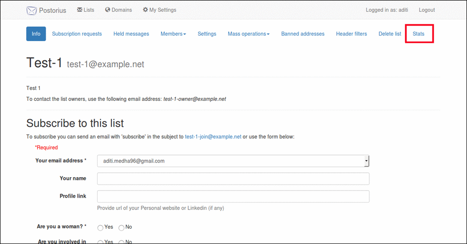
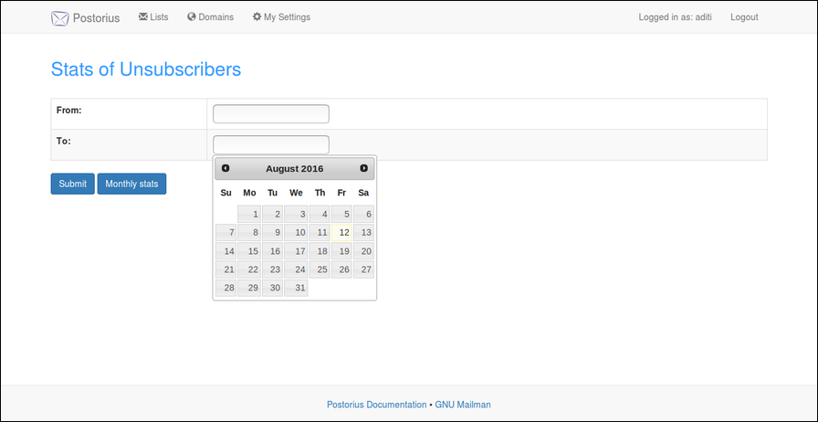
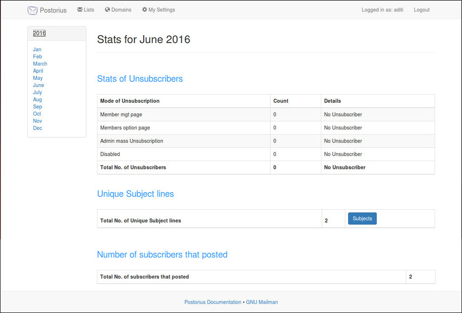

My next task was to implement the stats feature in Mailman3.It had three parts.This is the detailed report of the implementation.
Overview
Problem: Monthly reports are executed at the first of the month for prior month. Details in the report include, total number of members, subscription requests, digest members, and unsubscribes.
Desired Solution: Add additional stats for the following:
- Number of unsubscribers for :
- Members option page
- Disabled address
- Member mgt page
- Admin mass Unsubscription
- email confirmation (I am still working on the task of counting unsubscriptions through email confirmation.)
- Number of total unique subject lines
- Number of subscribers that posted
Product
These are the products’ images.
- This is the list subscription page.There is a "stats" button on the top right corner of the page which redirects to the stats page. 
- This is the form where the admin can view either the monthly stats by pressing the "Monthly Stats" button or can view the stats according to the start and end date entered through the form. 
- This is the page where the admin can view all the monthly stats.The default page shows the stats of the present month.The admin can see the stats of any month by selecting it from the left sidebar. 
Github
GitHub code changes can be seen here.
The pull request for the code changes can be seen here.
Functional Changes in Postorius
- Modal class 'UnsubscriberStats' that stores the details of the user unsubscribed through different channels.
- Added class'UnsubscriberStatsForm' in forms.py that takes start and end date as input and filters the stats between the given dates.
- Modified list.py to store the value of unsubscribed users through different channels in database.
- Provided 'Monthly Stats' button on the form page that takes the user to the page where stats are listed month-wise.
- Used 'Hyperkitty Api' to fetch the data of emails sent to a particular mailing list in the form of json file.
- Counted the unique subjects discussed in the mailing list and filtered them according to month for displaying the stats of 'Unique Subject Lines'.
- Counted the number of subscribers that posted by filtering the json file fetched from the Hyperkitty Api.
Files changed
- src/postorius/forms.py
- src/postorius/models.py
- src/postorius/templates/postorius/menu/list_nav.html
- src/postorius/urls.py
- src/postorius/views/list.py
- src/postorius/views/user.py
Files created
- src/postorius/static/postorius/js/datepicker.js
- src/postorius/views/stats.py
- src/postorius/templates/postorius/lists/stats_form.html
- src/postorius/views/monthly_stats.py
- src/postorius/templates/postorius/lists/monthly_stats.html